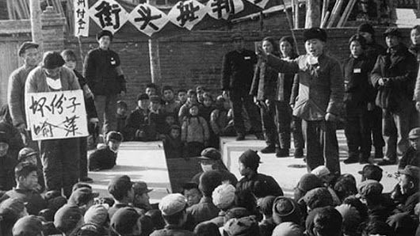

|
回目录 回主页 |
王仁生，上海有色合金铸造二厂的工人，他是1958年进入该厂的，在这之前他一直开了一家旧铁摊，回收各类五金废品的，在社会主义改造过程中，他的旧铁摊参加了合作化小组，后来又加入了合作社，在合并为合作社时，因其没有雇佣过工人，就给他订的成份是小摊贩，属于劳动人民一类的。1958年各行业支持支持工业建设，他被分配到这个厂。 从摊贩变成工人，都是劳动人民，就身份来说没有什么变化，但在四清运动时期，对其入股合作社的股金重新进行了核定，之后，他的成份莫名其妙地从摊贩变成了小业主。小业主是小资产阶级，属于剥削阶层，政策上这个阶层是被专政的阶层，与资本家一样，也会被抄家、被批斗。

就这样，王仁生从劳动人民变为了剥削阶级，他“享受”着与资本家一样的“待遇”，在笔者搜集到的王仁生的个人资料中，有几十份检查和思想汇报，检讨自己犯过什么错误，包括入股合作社领取股金、偷懒不干活、生活作风问题等等，还有要遵守被专政的各项制度的保证。其中有几份检查是讲到他在1968年2月25日送烟给老工人所惹下的麻烦事，让现在的人看到会觉得匪夷所思，送包香烟会有什么错？
2月25日送烟事情发生后，可能被举报了，他在3月1日写的检查中讲述了事情的经过： 【首先向毛主席请罪。向造反派战友们和革命群众请罪。 我在本月二十五号早晨上班前到毛蔴厂食堂去吃早饭的时候，我走了食堂间，问张玉英同志面什么时候好吃，她说现在就开始下了，我对她说去换了衣服来吃差不多吧？同时我又对她说，你香烟够不够吃，不够的话，我有一包勇士牌香烟多，随时我口袋里拿出了一包香烟给她，她说够吃不要，你自己吃好了，我就立刻又放到自己的口袋里，去换衣服了。这时碰到张财德同志不够吃，我给他一包，前天给应招满同志二包。我给张玉英同志香烟的目的，因我女人经常有病要治疗，她有时借过钱给我，又经常麻烦她蒸菜，所以我有点不好意思，就给她一包香烟讨好，结果没有要，我绝对可以保证没有别的用心和其他事情。由于我资产阶级思想存在根子，还没有完全拔掉，私字作怪，还没有改造好，又做错了一件事。】 在这份检查中他说他“又做错了一件事”，但错在哪里从他的检查中并没有看到他有什么认识，这样的检查自然通不过，为教育他，有关人员提审了王仁生，以下是3月3日对他的提审记录（注：“提审”一词常常用于已被关押的各种罪犯身上，王仁生因此事是否被关押材料上没有讲到）： 【一九六八年三月三日，革委会负责人及造反队负责人丁小毛、王纪良、阮荣根提审王仁生。 问：你必须老实一些，用烟来送人是否是企图用×污辱老工人？叫你老实检查，但你检查一些什么东西？国家暂时有困难，但你到处排队，排队买了烟还送人，为什么？ 答：我到外面是去买东西，并没有买烟，上次我吃早饭，听张玉英口气好像没有烟吃，所以我给了她。她平时很关心我，借钱给我，我又常去热菜，所以想去讨好她。（注：结合3月1日的检查内容看，张玉英可能是食堂员工） 小毛：你知道饭厅是关系两厂生命的重地，下次不准你去！我们队伍中已经被你搞得不团结了，你搞什么鬼？ 王纪良、阮荣根：你到底送烟送了几次，给什么人，我们再三警告你，你必须老实，可你却问一点讲一点。你其他还有什么问题？ 答：我没有其他什么问题，我是老实的，我检查交给你们了。 王纪良：你早上经常到食堂去干什么？你要自觉，老实交代。 答：我没有干过什么。我吃过饭就走，别的没什么。 小毛：你这是不是糖衣炮弹。你老实回答一下，我们下午准备开大会，你不谈，听群众揭发。 阮：上次大会以后，你不但没改，反而越来越不像话了，叫你检查，你还用主席语录为自己辩护。 王纪良：你这个人一向不老实，叫你谈问题，总像挤牙膏一样，别人不揭发，你也不谈，你以为别人都是傻子。 答：我准备下次老实，加强改造，这次我实在没有什么。 小毛：你准备老实，加强改造，这次就要很好地交代，不许混过去。上次大会没触你的灵魂。 答：我给香烟时并没有想到这么严重，下次不这样做了。 王纪良：叫你写检查，你还不大愿意，用不声不响来对付我。你今天到底交待不交待？做一件事，总有指导思想的，我们党的政策一贯是“抗拒从严，坦白从宽”。你说你表现好，你好在什么地方？你的做法很恶毒，你有一套。 答：我实在想不出来，你提一提我，有我就说，没有我也没有办法。 王纪良：回去写检查，全面一些，星期三交，怎么样？（注：1968年3月3日是星期天，星期三是3月6日） 答：我回去检查，但是在想不起来。 王纪良、阮荣根：叫你交待不愿意，回去检查又好像很为难，你到底搞什么鬼。不许吞吞吐吐，星期三交得出否？ 答：我实在想不出，是不是提一提？ 阮荣根：他这样做有三个目的，（1）企图讨好老工人，（2）想把小业主的本质混起来，混到群众中去，（3）拉一批人，打一批人，浑水摸鱼，从中取利。你在做梦？ 答：我资产阶级（思想）很多，没改造好，但我并没有什么坏心。 小毛：你不是改造好坏的问题，而是变本加厉了，这是绝对不许可的！形势这样好，你还想把水搅混，这是小问题吗？你为什么一定要星期五？ 答：我回去想想看。 阮：革命不是请客吃饭，你不是谈不出，而是不愿意谈。 答：我的脑子很简单。 王纪良、小毛：上次把人家庭搞得不团结，现在又把本厂老工人搞得人心惶惶、不愉快，这是为什么？ 王纪良：叫你写检查，这是形势所迫，你还讨价还价。 1968年3月3日】 这次提审让王仁生感觉问题严重，自己如不再按照专政人员提示的来检查，可能过不了关，于是回去挖空心思地重新写检查，没有等到星期三，第二天就交了上了，在这份检查中除了再次把以前的错误拿出来检查外，对于送香烟的问题他有了新的认识： 【我这些香烟是叫弄堂口的三轮车工友代卖的，香烟是没有带回家去，他们几位同志都给我香烟钱的。我给张玉英同志和老年工人的香烟的目的，我现在揭露思想自己彻底来表态，因为张玉英同志是工会组长，她有时问我家庭经济上有困难吗？我说只有女人经常要看病治疗，经济上有些困难，她有时借过钱给我，因此我给她香烟想讨好她，结果她没有要。我出发点今后想还要问她借钱，请大家替我说点好话，对我的印象好一点，绝对没有其他关系，我可以保证。我起先错误思想，我在想支援几包香烟要什么紧呢？况且又给我的钱，通过造反队委的帮助和启发，我自己又回忆一下，的确我才明白，这不是几包香烟问题，因为我的成份是小业主，是阶级路线斗争问题，的确是糖衣炮弹手法，由于我受到资产阶级的严重影响，这些旧思想、旧风俗、旧习惯没有完全改掉，也是资产阶级玩花招的一个方式。 全国一片大好形势，我们厂里也是如此，我这样的错误做法，使厂内革命群众造成不团结，我又犯了一次错误，我有罪，罪该万死。我诚恳的要求革命委员会和造反队工委和革命群众再一次宽大我错误的行为。……】 他把送烟行为上升到阶级路线斗争的层面上，给自己上纲上线，说自己“罪该万死”的地步，也不知这样的检查在组织看来是否深刻，他是否能过关？在以后的检查中，送烟的事情已经成为他必写的内容。 在那个年代，对于成份不好的人来说，干什么、说什么都要十分小心谨慎，不知道那个行为和那句话就成为了别人批斗你的理由，像王仁生这样送包香烟就惹出了麻烦事，他还曾因为说“错”话而被批斗： 【小业主王仁生说：我是实在在走投无路、无法可想下的情况下开旧铁摊维持生活的。 我们说：王仁生在解放后1949年开旧铁摊，是在实在走投无路、无法可想，这是对我们社会主义的新中国，对毛主席，对共产党的极大诬陷，王仁生是想借此来混淆他的阶级本质，是罪该万死。】 欲加之罪何患无辞。 1979年7月，上海有色合金铸造二厂党支部向上级写了《关于王仁生成份的纠正意见报告》，改正王仁生小业主的成份，恢复摊贩成份，也算是给他平反了。 来源：故纸故事 作者：孙陇故纸故事 |
回目录 回主页 |